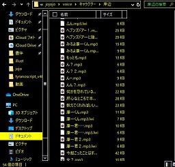
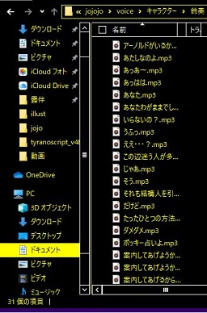

雑記
ネタバレと ろくでもないこと しか 書かない。
↓↓↓↓↓↓↓
2020/11/26まだまだ一巡鬱。色々移植。
2021/07/06
パソコンぶっ壊れたのでスマホから入力
2020/04/02
1～6部ジョースターに最大のお疲れ様。
たとえ彼らの受け継いできたすべてが消えても、わたしたち読者の受け取った感動は絶対だ。
2020/04/02
ジョジョ乙女ゲ―を漁る。
４部ゲ―やったよ。(動機の６割はだが断るを見るため)。18回ﾋﾟﾁｭって3人攻略できたけどｼﾞｮｽｹ君だけ無理だったお(´・ω・`)
2020/04/02
ここ一ヶ月で手を出した彼是～昨年度10単位落とした
◇ジョジョ二次をしゃぶりつくす
キチガ院スレ．．．好きです(小声)
ニコ動の吉良うさ、暗殺ポッケモン、jojoTV企画、パッショーネ２４時、うろジョジョ、ジョジョ卓ゲ
◇元ネタ洋楽、映画
primeでミスト見た。オチが壮絶で変な声でた。
洋曲全スタンドコンプは道のり長いけどゆるゆるやっていけたらいいな（英語２）
◇公式musicアルバム
primeで聞いた。ジョナサン未来への遺産 花京院ノスタルジアやばかった。もう…やばかった（語彙）
あと、きしべろのテーマも聞いた。4部EDの早口を経験した後だと大分歌いやすいし歌詞も分かりやすい印象。like a butterfly すこ。
◇動画
ジョジョクトゥルフTPRG動画に影響されて。
用意したもの…ゆっくりムービーメーカー、Aviutl、つんでれんこ。


神フリーソフト開発元様方には感謝しかない
最初 YMMの素材設定わからなくて死にそうになったけど
俺 の PC で 推 し が 動 く
◇アニメ音声切り貼り
用意したソフト…ロイロゲームレコーダー、Aviutl、audacity。


幸せ音声ライブラリの完成
ロイロDLでwinzapくらった．．．ちゃんと公式サイトからDLしよう．．．
20.02.09
昨日見た夢がめちゃくちゃ仗露だった話
まさかの仗助SPW財団継承ルート。普段無表情めでスーツ着た仗助が、承太郎さんの仕事を継いで働いてて、財団の建物奥の無菌室みたいなところに記憶のない露伴先生がいる。先生体重が５０ｇくらいしかなくて密度的にちょっと浮いてる。通常の気圧下ては呼吸が苦しいらしい。音声なかったけどたぶん仗助 先生を救う方法を探していて それはお金がないとできないことで ジョセフにに頭下げて 情報収集のために財団にも協力してもらっている。的な導入からはじまるツバサク〇ニクルだった。
20.02.09
１～6部世界と７部８部世界の考察
・血統の誇り→血統の克服（例：受け継ぐ者→男の世界、東方家の呪い）
母に気高さを教わったDioや、愛国心の大統領が敵側である。
◇呪いの及ぶ血族の範囲は？←露伴短編の設定で解釈すると、結婚して名字が違ウクナッタら抜けられる？ルーブルで露伴を襲った黒い絵だが、完成当時奈々瀬さんはスデに山村姓だったのだろうか。ルーブルは血の呪いを解く話としてリオンと共通している言えそうだが、直接の子孫ですらないのにとばっちり受けるとかめっちゃ迷惑だよね。
・主人公正義→自分の行動やありかたへの迷いがある
SBRコンビは悩みながら成長していく。リオンでは定助が自分を探す。おまえは憲助に騙されているだのホリーはロカカカに失敗しただの、誰が敵なのか味方なのか分からないこわい。長いジョジョシリーズで一度も描かれたことがない「身内の裏切り」がみられるのかもしれない。（５部文庫あとがきの、没になったフーゴ内通者設定のような）
・泣き言。１～６世界が完全に消失していた場合（考えるのをやめたい楽になりたい）
悲しみで死ぬる。せめて記憶や歴史は違えどｎ巡後も魂や根本的な誇りは引き継がれる的なアレがないと死ぬる。（魂引き継ぎ設定もそれはそれで推しカプによっては傷付く。空条仗世文ってジョジョ３人のどれなんだ？はっきりしろとおもうが３人に分散することで辛うじてあらゆるカプ爆死をまぬかれているところはある。）私らの知る仗助が、三十路になるより前に未来を奪われた事実にガチで泣いた。哲学的な消滅を死よりもひどいものとして扱う作品は多いけど、簡単すぎる…あっけなさすぎる…。
（プッチ）記憶歴史保持ただし未来の確定した世界⇔（エンポリオ）過去全て失っても未来へ進む世界
そんな２択ありかよ…ありかよ…。嫌だ。誰かみんなを助けてください。こんなことならいっそジョジョいる地球なんて爆発すればよかったのに。自然や宇宙のルールらしくてさみしいけどそれはそれで美しかったのに。普通に文明崩壊できない人類の精神なんてかわいそうだよ。やめたげてよ。先を行くなんて辛すぎるよ。
それでも話は進んでいくから、5部4部の存命キャラが、違う歴史のなかでもアイリンみたく幸せに生きてることを祈ってSBR読む。（アイリンは徐倫？天国製だと死んだ魂は次の世界に来れないの？どうでもいいけどブサイク太郎さんわりに好き）ジョニィ黄金の精神ちゃうやんオイと笑いつつ、ジャイロとのコンビの活躍を見て、ラストには1巡失敗世界ももうかなり好きになっている。んでリオンを読む………………。
リオンの面白さに関わらず、定期的に2時間眠って思い出して泣くんだが、本当に4部の杜王町は消えてしまったのだろうか？広瀬康穂や東方定助が好きだ。常秀も常敏も吉良も好きだ。きっと読み返すたびにより好きになる。でも立ち直れない。物語のキャラクターとしての生命は活躍することであって、存命している設定そのものではないのは分かっている。彼らは1999年の夏に最高のいのちを持っていたし、それが美しい締めくくりを迎えたのも知っている。パラレルワールドが無限にあるのなら6部の出来事がまるまる起こらなかった世界も想像できそうだが、多くの過去を受け継いできた彼らにそれをするとなんとなく引け目があるし、あとF徐めっちゃ好きだから無理切り離せない。
どうして7部8部は生まれたのだろう。あー登場キャラ全員嫌いになれたら楽なのになー（贅沢）。
・ぼくのかんがえた８部の展開と９部以降 ～彼らは2012年３月、あるいは2011年11月26日を超えて進むことが出来るのか
８部ラストでもう一巡。そのうち誰か宇宙のループに気づきそう。４の倍数の部で杜王町。（何巡したら4部のやつらに会えるん？
20.01.24
漫画家先生小説の反省
・先生が白い→早人君がいい子なせいもあるから仕方ないが、次はもっと自業自得で追い詰められるようにしたい。賢と2人でいれば勝手に大人げなくなってくれる気がする。
・スラング→毒吐きネットマナーだか何だか、当時の個人サイトの雰囲気よーわからん。
・語尾の偏り→リュンコの日本語が不自由なのは仕方ないが、長い話を書いていると、どうしてもBBS民の言葉の不自然さが目立ってくる。悲しい。
・早人君ダイヤルアップの時代に遠隔監視とか技術高くね？
20.01.24
露伴受けレ〇プ厨によるよまさんのチェック項目
１．筋力の差 優
２．ヤンデレ 優
３．社会的スペック 良
基本評価 ＳＳ（すごく好き）
【属性】 攻撃性Ａ 執着Ａ ストーカーC デレＥ(重要） メンヘラＣ
備考 序盤の即死率が高いルート。殺意といううずたかく積まれた執着は、ちょっとしたきっかけで反転する。陽露というカプ自体、殺害前提のレ〇プがデフォみたいなところがある（ド偏見）。よまさんそこそこ人間やめているので、本気出せば♂だろうと妊娠させられる。
先生無茶苦茶恐れているけど肉体はかなり好き。快楽堕ちよりは芸術家としての開き直りのほうがはやく、まれに積極的な態度を見せてくれるようになるが体力が足りないのですぐへばる。
20.01.22
ページできたよ
コンタクト
トップへ
◇